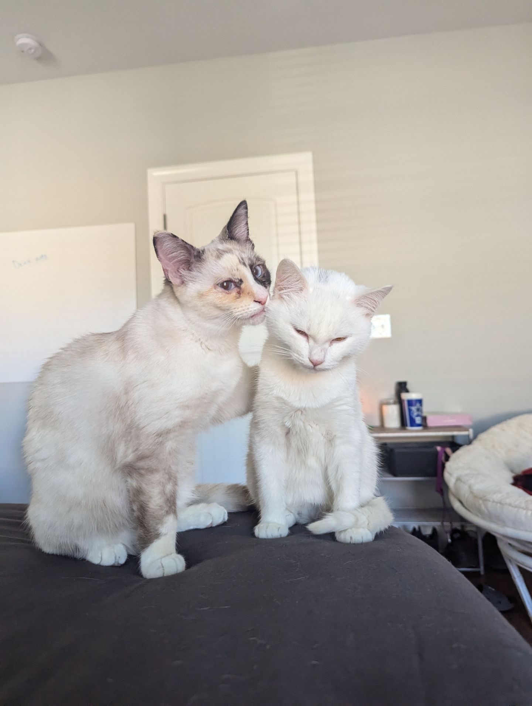

Hobbies
I love building software projects in my spare time.
Whether it is a small script or a full application, I enjoy the process of turning ideas into working code.
I am a competitive Valorant player and former member of Auburn University's Valorant varsity team.
At my peak I was ranked in the top 0.1% of players in North America.
Fun Facts
Birthplace
I was born and raised in Alabama. War Eagle!
Education
I am studying Computer Science at Auburn University with a focus on software systems and machine learning.
Pets
I have a golden retriever named Byte who loves fetch almost as much as I love debugging code.

Likes/Dislikes
- [Like] Coffee in the morning
- [Like] Open source software
- [Like] Competitive gaming
- [Dislike] Merge conflicts
- [Dislike] Slow Wi-Fi
- [Dislike] Missing semicolons at 2 AM
I follow the Valorant competitive scene at the official
Valorant website.